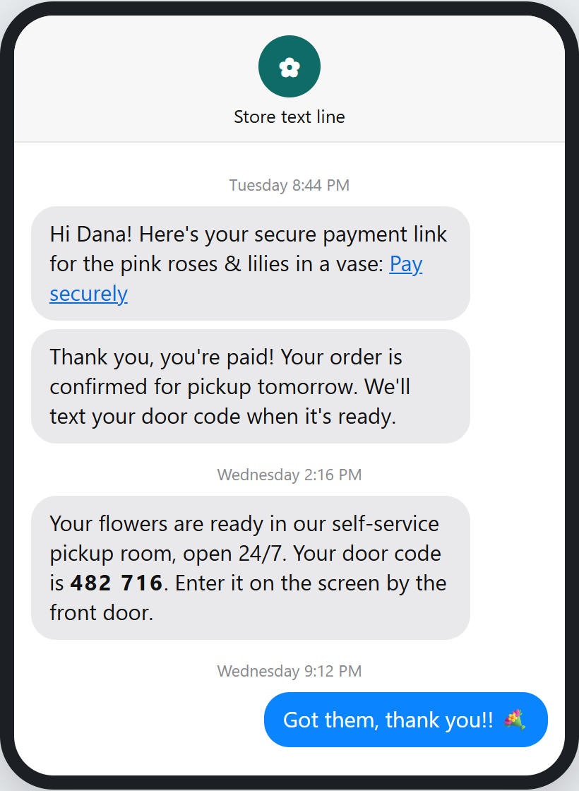
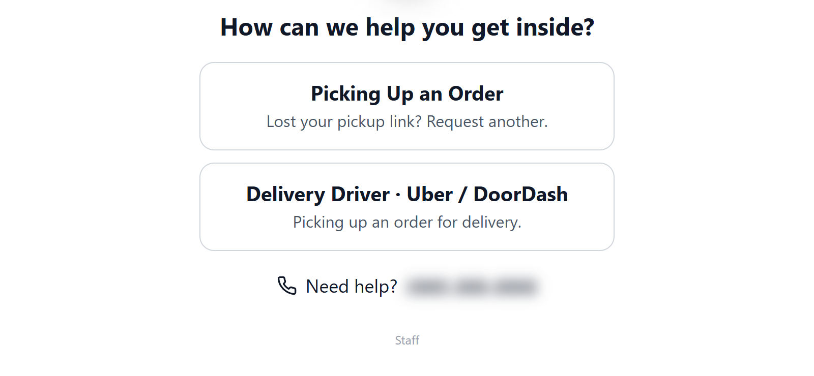
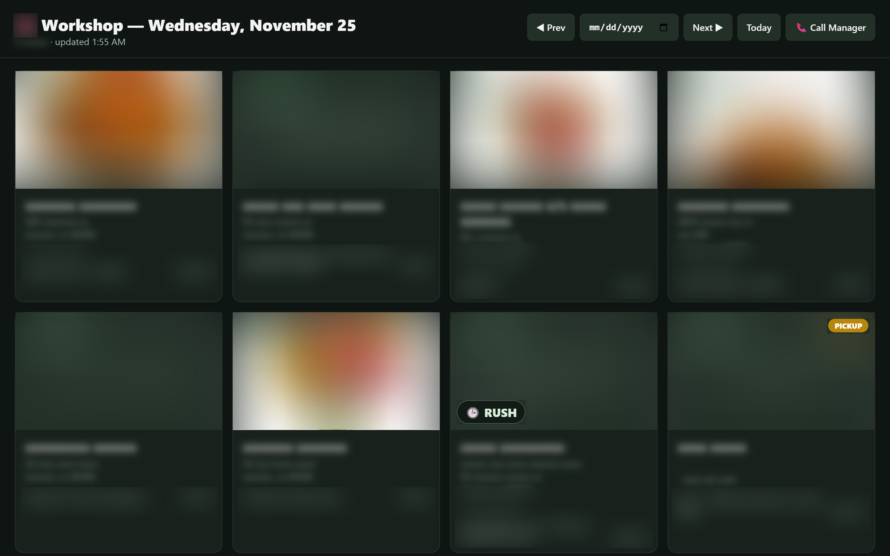

I find the jobs a small business can't keep up with, like the phone after hours, the door when nobody's there, and orders that get typed twice. Then I hand them to AI and code that do them reliably. This is the system I built for a small retail business and still run and improve every week.
By Justin · built solo since July 2026 · about 3,300 changes shipped · 7,200+ automated tests
In short
The problem: calls nobody could answer and a store that couldn't be staffed every hour meant lost sales and a lot of manual work.
What I built: an AI phone assistant that takes orders and payments, and a self-service room that customers and couriers open with a one-time code. Around them: automatic order printing, cart recovery and review follow-ups.
The result: after-hours callers who reached nobody fell from 81% to 2%, and 44 pickups happened with nobody in the store.
Results
81% → 2%after-hours callers who reached nobody
21 → 75calls a week answered by the AI assistant
44pickups with nobody in the store (29 customers, 15 couriers)
~80 → 121Google reviews since automatic review asks began in spring 2026 (about 50% more); rating 4.8★
After-hours callers who reached nobody: before the AI assistant vs. now
Before (May 20 – Jul 15)Now (Nov 7 – 24)
Show as a table
Before
Now
From the phone company's call records. Calls under 10 seconds (misdials) are left out.
Calls the AI assistant answered, per week
Show as a table
Week of
Calls
Aug 31 – Nov 22, 2026, from the business's own weekly numbers.
"After we closed or when we were busy, calls would just go to voicemail and we'd lose track of what was an order, a sales call or an action item. Now every call gets answered. If it's an order, it's waiting on the board when we open. If it's a sales call, our assistant politely explains we are not interested at this time and to remove us from the list. If it's an action item, I'm made aware immediately by text or email. I spend my time on the work, not the phone.
The key for our store has been making sure the AI complements our brand and that we are still involved with our customers. It's all about balance."
Becky · Small Business Owner
See it in action
A sample order from start to finish: a customer calls in the evening, pays by text, and picks up the next night from the self-service room with nobody in the store.
1 · The call
Re-created sample. The script is made up, based on how real calls go. The assistant is in her real voice; the caller is an AI voice. No real customer is in it.
2 · The texts

Sample thread with a made-up name and code. Real customers get these texts automatically.
Featured · 1 of 2
The self-service room
A small shop can't keep someone at the counter from open to close, let alone at night. The room lets customers pick up, shop and leave on their own, and lets couriers collect deliveries without anyone there to let them in.
A pickup, step by step
When the order is ready, the customer gets a text with a one-time door code.
The door screen asks: picking up, or delivery driver? The code opens the door.
Inside, a voice assistant greets them by first name and tells them where their order is.
It reads the card message back and prints the card only after a plain "yes".
Walk-in shoppers pay at a self-checkout kiosk.
When they leave, a camera sweep confirms the room is empty before the visit closes.
Couriers, with no one there
A delivery books an on-demand courier automatically.
Each driver gets a code that works only while that driver is due. A replaced driver's code stops working.
If no driver accepts, it tries again and tells the team in time to step in.
The fee is checked against what the customer paid before booking.
Built to be trusted
No shared codes: every code belongs to one visit.
The room counts as empty only after a full camera sweep says so.
Every visit and every print is logged for the owner.

The door screen. Customers and couriers let themselves in with a one-time code.
44 pickups with nobody in the store29 customers and 15 couriers, no staff needed.
Featured · 2 of 2
The AI phone assistant
Every missed call in a small shop is a lost sale. The assistant answers when the team can't, takes real orders, and hands people to the team only when a person is actually needed.
CALLERCalls the store, English or Spanish, any hour
AI ASSISTANTHolds the conversation
CODEDecides prices, fees, addresses, who gets called
RESULTA paid order, a courier, or a clear job for the team
What a caller can do
Ask about hours, products, prices and delivery.
Order a delivery: the assistant finds the product, checks the address (it catches out-of-state ones), works out the fee and texts a secure payment link.
Get answered in Spanish.
Reach a person when it matters. Transfers follow the team's rules, with a clear message when nobody can pick up.
What the team can do
Call-outs: staff text one line and the assistant phones a customer or recipient for them. It leaves the message or asks a yes/no question (like "is this substitute OK?"), then texts back what happened.
Holiday mode: one switch per store. Callers go straight to the assistant, and nobody's phone rings.
Quiet alerts: the team hears only about calls that need them, by text first.
After hours: 81% → 2% of callers reached nobodyCalls answered by the assistant grew from 21 to 75 a week, and 9 orders were taken and paid with no staff involved.
Also built
Three more pieces that save the team time
Orders that print themselves
Every order lands on one live production board, whether it came from the website, the phone assistant or staff.
The work ticket and gift card print together automatically. Nobody retypes an order.
A late change reprints the ticket marked CORRECTED.
Sales reports by day, week or month, with Excel export.
Operations · no double entry
Abandoned-cart recovery
The checkout is saved as the customer types.
Staff are alerted right away and can call while the customer is still ready to buy.
A one-tap link brings the cart back.
Out-of-area shoppers get "Have us call you" instead of a dead end.
Website · sales recovery
Reviews on autopilot
After delivery, the customer gets a text with a photo of what was delivered and a one-tap way to leave a review.
Any reply with a problem reaches the team.
From the low 80s to 121 Google reviews since the asks began in spring 2026, about 50% more, with the rating at 4.8★.
I first ran it as a no-code automation, then rebuilt it into the main system once it proved itself.
Customer messages · reputation

The live production board. Every order from the phone assistant, the website and staff lands here. Customer details are blurred.
How I work
My approach to AI
Most small businesses don't need "AI". They need the phone answered, the order right and their evenings back. This is how I get there.
1 · Start where the business leaks time or money
I start by watching the work: calls that go unanswered, orders typed twice, couriers waiting at a locked door, review requests nobody remembers to send. The jobs that repeat get automated all the way. The judgment calls stay with people, and the hand-off to them is made clean.
2 · Test the tools, measure, keep what works
I try more than one option and judge it on real use, not demos. A bigger, smarter model sounded better on paper, but callers heard the pause, so I kept the faster one and moved the hard thinking into code. When a voice provider ran out of credits mid-day, I added a backup voice and an alert. When an AI grader agreed with my own review of real calls only 11 times out of 29, I switched to checking flagged calls by hand every day.
3 · The AI talks; code decides
Prices, delivery fees, addresses, door access and who gets called are enforced in code and covered by tests. The AI handles the conversation, never the rules. That's why the business can trust it with money and a door.
4 · Real customers are the test
Each real problem becomes a fix with a test, so it can't come back. Anything touching money, customers or the door gets the full test run and a careful review before it goes live.
5 · AI as my engineering partner
I build with Claude. It writes and tests the code, and I set the rules, check the results on real calls and make the decisions. That's how one person ships a system this size and keeps it running.
Tools I've used in production
Claude / Claude Code
Voice AI platforms
Twilio calls & texts
Text-to-speech voices
Google Maps Platform
WordPress / WooCommerce
Railway
Raspberry Pi
Cloudflare
Online payments
Why this matters for a small business
Fewer lost sales
The calls and carts that used to disappear after hours now turn into orders or call-backs.
Less paid time on busywork
No retyping orders, no waiting by the door, no chasing reviews. Staff hours go to the work only people can do.
Small steps, measured
One problem at a time, with numbers before and after, so the owner sees what each step is worth before paying for the next.
Fixing what real calls exposed
Getting it to work was the easy part. Making it trustworthy took listening to real calls and fixing causes, not symptoms. Three examples:
Calls stalled on a slow website
Symptom
Product lookups sometimes took long enough that the assistant went quiet mid-call.
Cause
The shared web host is slow at busy times, and every lookup waited on it.
Fix
The catalog is kept ready in memory and refreshed in the background. Every lookup now answers within 5 seconds, and prices are re-read live when it matters.
A price could change after the quote
Symptom
A price could change between the quote and the booking.
Cause
The booking step trusted the earlier quote.
Fix
Booking re-checks the price and refuses a mismatch. The caller hears the new total before anything is charged.
A false "nothing was sent" alarm
Symptom
The end-of-call review warned that a caller's request never reached the team, but it had.
Cause
The review guessed from a fixed list.
Fix
It now counts only alerts that actually arrived, and a test fails if a new tool is left off.
What I can set up for your business
An AI phone receptionist: answers after hours or when you're busy, knows your hours and holidays, answers from your approved list, takes messages and transfers by your rules.
Order flow automation: website and phone orders on one board, printed automatically, with no retyping.
Follow-ups that run themselves: review requests, abandoned-cart call-backs, and reminders.
Each one starts with a short look at where your time goes, then a small setup you can measure before going further.
I'm Justin. I build practical AI systems for small businesses: the kind that answer the phone, take the order and open the door, then keep working when nobody is around. I've built and supported this one since July 2026, working every day with the team that uses it, and every week I fix what real customers run into.